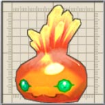
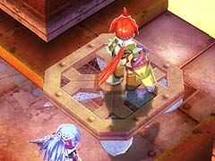
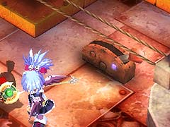

目次 > ゲームについて > 日本Falcom 攻略 > ZWEI II > ダンジョン一覧 > 基底区画 (LV.9)
らんの眼
ZWEI II (ツヴァイ 2、ZWEI II Plus)
| 概要 | 情報 | 攻略チャート |
| フード交換 | ペットについて | ボス戦 |
| 敵キャラ一覧 | ハンターランク | G-コロッセオ |
| アイテム一覧 | ガジェット一覧 | トレジャー一覧 |
| ダンジョン一覧 | クリアデータ特典 | Plusの追加要素 |
| ZWEI II攻略へ | 目次へ戻る |
| 第1 階層 |
|  | A 地点の壷を壊すと、中から敵が出てくるので注意してください。 |
|  | B 地点のリフトに「疾風の魔法」を当てると、リフトが動き、B' 地点まで移動できます。 |
|  | C 地点のレバーを動かすと、C' 地点にあるリフトを止めたり、動かしたりすることができます。 |
|
D 地点にいる中ボスの「おおあかじぇりー」を倒すと、D' 地点の扉が開きます。 |
| 第2 階層 |
| A 地点のレバーを動かすと、A' のリフトを止めたり動かしたりできます。 | |
 |
B 地点にある合計6 つの的に全て攻撃を当てると、B' 地点の扉が開きます。「無垢の魔法」が当てやすいと思います。 |
|
C 地点にある合計6 つの的に全て攻撃を当てると、C' 地点の扉が開きます。 リフトに乗らずとも、「C」と書いてある場所で壁越しに「アンカーギア」や「無垢の魔法」などで攻撃を当てられます。 |
| D 地点の宝箱を開けると、D' 地点の敵が出現します。 一度開けてしまうと、D' 地点の敵は常に配置されます。 |
|
 |
E 地点のボタンを押すと、E' 地点にリフトが設置され、B' 地点へ移動できるようになります。 |
| 第3 階層 |
 |
D 地点のリフトには、変な置物が置おかれ、そのままでは主人公が乗れません。この置物は「アンカーギア」で数回攻撃すれば壊れますが、誤って下に落ちないように注意してください。 |
|
A 地点のスイッチを押すと、A' 地点の扉が開きます。 |
|
B 地点のスイッチを押すと、B' 地点の扉が開きます。 |
|
C 地点のスイッチを押すと、C' 地点の扉が開きます。 |
| 概要 | 情報 | 攻略チャート |
| フード交換 | ペットについて | ボス戦 |
| 敵キャラ一覧 | ハンターランク | G-コロッセオ |
| アイテム一覧 | ガジェット一覧 | トレジャー一覧 |
| ダンジョン一覧 | クリアデータ特典 | Plusの追加要素 |
| ページの上部へ | ZWEI II 攻略へ | 目次へ戻る |